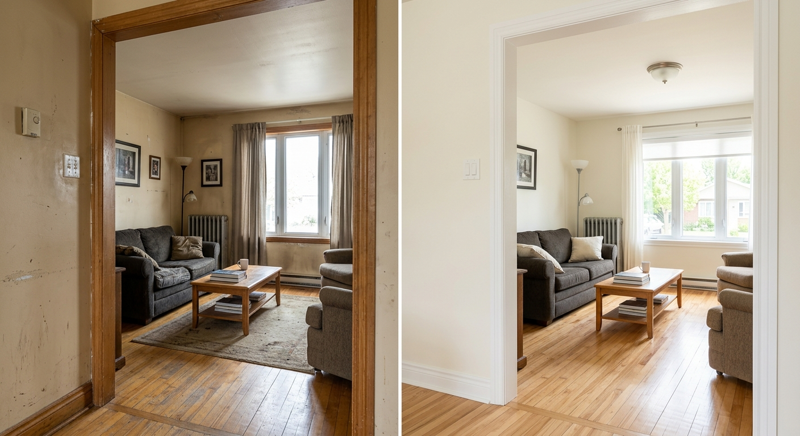
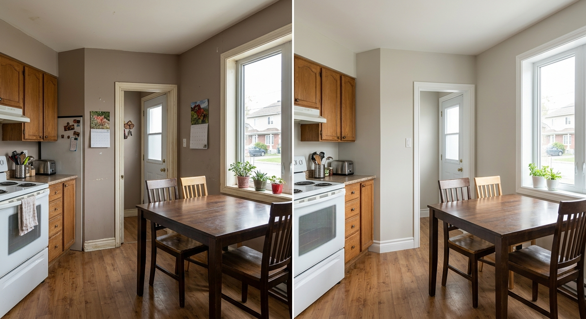
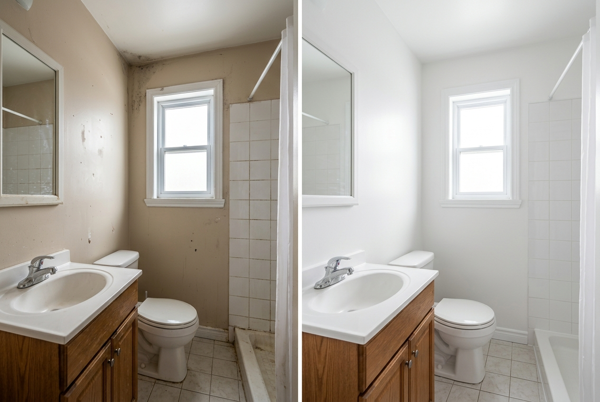
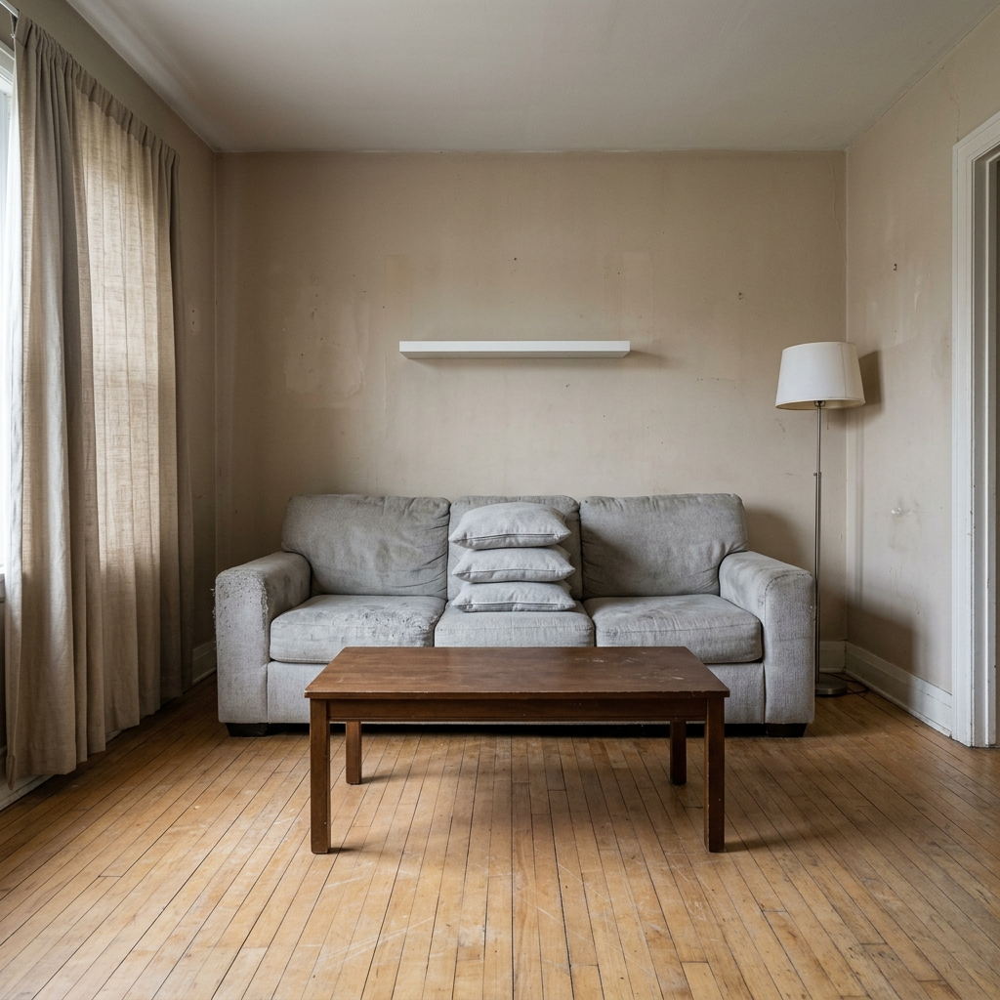

Maison ou condo
Rafraichissement complet, pieces principales, chambres, plafonds et moulures.
Soumission residentiellePeinture interieure et exterieure pour proprietaires exigeants: preparation serieuse, lignes propres et resultat durable.
La page doit aider chaque client a se reconnaitre vite: maison, exterieur, commerce leger ou projet avant vente/location.
Rafraichissement complet, pieces principales, chambres, plafonds et moulures.
Soumission residentiellePortes, cadrages, escaliers, clotures, balcons, garages et elements de facade.
Voir les surfacesBureaux, locaux, cliniques, corridors et espaces professionnels bien presentes.
Peinture commercialeRetouches strategiques pour donner une impression propre rapidement.
Demander un refreshVous cherchez des peintres a Terrebonne capables de livrer un resultat propre, net et rentable pour votre maison, condo, multiplex, commerce ou bureau? Peinture Terrebonne offre un service de peinture interieure et exterieure concu pour les proprietaires qui veulent une equipe ponctuelle, une preparation serieuse et une finition qui fait monter la valeur percue de leur espace.
Notre approche est simple: inspection claire, protection complete, produits adaptes au climat quebecois, communication rapide et chantier laisse propre. Que vous compariez les meilleurs peintres Terrebonne, que vous cherchiez un peintre residentiel Terrebonne pour rafraichir une maison familiale ou une compagnie de peinture Terrebonne fiable pour un local commercial, notre page vous aide a prendre une decision avec confiance.
Une belle peinture ne commence pas avec le rouleau. Elle commence avec l'etat des surfaces, le choix du produit, la protection des pieces et une methode de travail constante.
Pour maisons, condos et logements, nous transformons salons, cuisines, chambres, plafonds, cages d'escalier, portes et moulures avec une finition propre, lavable et lumineuse.
Nous peinturons les surfaces exterieures qui donnent du caractere a une propriete: portes, cadrages, balcons, escaliers, clotures, garages et elements de facade.
Pour bureaux, commerces, cliniques, logements locatifs et espaces professionnels, nous livrons une peinture propre, coordonnee et durable sans compliquer vos operations.
Au-dela des murs, nous prenons en charge les surfaces qui changent le plus la perception d'une propriete: armoires, escaliers, rampes, clotures, boiseries et preparation complete.
Rafraichissez une cuisine sans remplacement complet. Nous evaluons le materiau, degraissons, sablons, appliquons l'appret approprie et recommandons une finition resistante aux manipulations quotidiennes.
La preparation est ce qui se voit le moins au debut, mais le plus avec le temps. Nous corrigeons les petites imperfections, sablons les zones rugueuses, calfeutrons les joints et protegeons les pieces avant l'application.
Escaliers, limons, contremarches, rampes et garde-corps demandent un produit durable et une preparation adaptee aux passages frequents, au gel, au soleil et a l'humidite.
Bois, metal ou surfaces deja teintes: nous validons l'etat, nettoyons, grattons au besoin et appliquons une finition qui ameliore l'apparence de votre terrain sans donner un look surcharge.
Les details font la difference dans une finition premium. Portes interieures, cadrages, plinthes, moulures et boiseries jaunies peuvent transformer l'impression de proprete d'une maison.
Pour vendre, louer ou remettre un logement en service, nous ciblons les surfaces qui donnent rapidement une impression d'entretien: murs marques, coins uses, plafonds taches et zones passantes.
Avant de parler de gallons et de couleur, nous observons les surfaces. Une maison a Lachenaie avec beaucoup de lumiere naturelle ne reagit pas comme un condo du Vieux-Terrebonne ou un commerce pres des axes passants. Les murs peuvent avoir des reparations visibles, une peinture trop lustrée, de la fumee ancienne, des joints ouverts, de l'humidite ou des traces d'impact. Notre recommandation tient compte du vrai contexte.
Cette rigueur permet une soumission peinture Terrebonne plus precise. Vous savez ce qui est inclus, les limites du projet, les surfaces visees, le type de preparation et le resultat attendu. Pour une soumission peinture gratuite Terrebonne, la clarte est un avantage concurrentiel: elle evite les extras surprises et les attentes floues.
La peinture influence la perception d'une propriete en quelques secondes. Des lignes nettes autour des moulures, un plafond uniforme, des coins propres et une couleur bien choisie donnent une impression d'entretien. Pour un vendeur, cela peut aider les photos d'inscription. Pour un proprietaire occupant, cela change l'ambiance du quotidien. Pour un gestionnaire commercial, cela renforce la confiance des clients.
Notre equipe agit comme une entreprise de peinture Terrebonne orientee resultat: protection des planchers, deplacement prudent des meubles si prevu, masquage, nettoyage, verification de la couverture et inspection finale. Le chantier doit paraitre controle du debut a la fin.
Nous connaissons les realites de Terrebonne: maisons familiales de La Plaine, proprietes plus recentes d'Urbanova, secteurs etablis de Lachenaie, condos, bungalows, jumeles, commerces de proximite et immeubles multi-logements. Cette connaissance locale aide a proposer des finis pratiques, des couleurs qui vieillissent bien et des calendriers realistes.
Choisir une compagnie de peinture Terrebonne locale simplifie les suivis. Vous pouvez appeler, envoyer des photos, demander une precision ou planifier une visite sans passer par une structure lourde. Le service reste humain, direct et responsable.
Le residentiel demande de la minutie et du respect. Le commercial demande de l'organisation et de la constance. Nous combinons les deux.
Un peintre residentiel Terrebonne doit travailler comme s'il etait dans sa propre maison. Nous protegeons les zones de vie, reduisons la poussiere autant que possible, expliquons l'ordre des pieces et adaptons le calendrier a votre routine. Les projets typiques incluent les maisons completes, les condos avant emmenagement, les chambres d'enfant, les cuisines, les salons ouverts, les cages d'escalier hautes, les plafonds tachés et les portes interieures.
La peinture maison Terrebonne peut viser plusieurs objectifs: moderniser sans renover, uniformiser apres des reparations, preparer une vente, corriger une couleur trop foncee ou augmenter la luminosite. Nous pouvons guider les choix vers des blancs chauds, greiges, gris doux, rouges accents, couleurs profondes ou palettes plus naturelles. Le but n'est pas seulement de suivre une tendance: c'est de creer un espace coherent avec votre lumiere, vos planchers et vos meubles.
Pour les entreprises, le temps d'arret coute cher. Nos peintres commerciaux a Terrebonne planifient les etapes: zones prioritaires, acces, protection, odeurs, sechage, remise en service et inspection. Un bureau ou une clinique doit rester professionnel. Une boutique doit paraitre fraiche. Un immeuble locatif doit etre durable et facile a entretenir.
Nous recommandons des peintures plus resistantes dans les corridors, receptions, cages d'escalier, salles d'attente et zones a fort contact. Une finition commerciale efficace tient compte du nettoyage frequent, de l'eclairage artificiel et de l'image que vos clients percoivent. Pour un commerce a Terrebonne, Mascouche, Repentigny ou Laval, une peinture propre peut devenir un signal silencieux de fiabilite.
Un bon processus reduit les risques. Il protege votre propriete, aligne les attentes et permet d'obtenir une finition constante, meme sur les projets complexes.
Vous appelez le 450-914-7542, remplissez le formulaire ou envoyez des photos par courriel. Nous validons le type de projet, le secteur, les surfaces, les delais et les priorites.
Nous preparons une soumission peinture Terrebonne claire avec les travaux inclus. Si une visite est necessaire, elle sert a confirmer la preparation, les acces, la hauteur et l'etat des surfaces.
Protection, nettoyage, reparations mineures, sablage, apprêt au besoin, calfeutrage et masquage. C'est cette etape qui distingue les peintres professionnels Terrebonne d'un simple coup de rouleau.
Nous appliquons les couches requises avec des techniques adaptees aux murs, plafonds, moulures ou surfaces exterieures. Les lignes, coins et retouches sont verifies avant la fin.
Le chantier est range, les protections sont retirees et les zones peintes sont inspectees avec vous. Notre objectif est un resultat propre, durable et pret a impressionner.
Voyez comment une finition propre, des couleurs bien choisies et des lignes nettes peuvent rendre une piece plus lumineuse, plus moderne et plus accueillante.






Des clients de Terrebonne et des environs apprecient notre communication claire, notre respect des lieux et la qualite de la finition.
★★★★★“Travail tres propre dans notre maison a Lachenaie. Les murs etaient abimes et le resultat est beaucoup plus lumineux. Soumission claire et equipe respectueuse.”
Julie M., Lachenaie
★★★★★“Nous avions besoin de peintres pour un bureau a Terrebonne avec peu de temps disponible. Le projet a ete organise sans perturber nos operations.”
Marc D., Terrebonne centre
★★★★★“Service rapide pour une peinture exterieure. Les boiseries et la porte d'entree ont vraiment ameliore l'apparence de la maison.”
Nadia R., La Plaine
Chaque projet est different. Voici les principaux elements qui peuvent faire varier le prix d'une peinture interieure, exterieure ou commerciale a Terrebonne.
Reponse rapide: le prix d'un peintre a Terrebonne depend surtout de la superficie, de l'etat des surfaces, des reparations, des plafonds, des moulures, de l'acces, du nombre de couleurs et du type de peinture. Pour savoir combien coute peinture maison Terrebonne dans votre cas, la meilleure etape est une soumission gratuite avec photos ou visite.
Un petit projet interieur peut etre estime plus vite qu'une maison complete avec plafonds, moulures et reparations. Les surfaces foncees, les changements de couleur drastiques, les murs abimes et les hauteurs complexes augmentent souvent le temps requis.
Nous evitons les promesses de prix trop bas qui creent des extras. Une estimation utile doit expliquer la preparation, les couches, les produits et les limites.
La peinture d'armoires de cuisine peut transformer une piece sans remplacement complet, mais elle demande une preparation plus technique: degraissage, sablage, adherence, apprêt, finition et temps de sechage. Le prix varie selon le nombre de portes, le materiau, l'etat et la finition souhaitee.
Pour ce type de demande, des photos claires des armoires, panneaux lateraux et tiroirs permettent une premiere evaluation plus rapide.
| Recherche | Ce que le client veut savoir | Meilleure action |
|---|---|---|
| Combien coute peinture maison Terrebonne | Budget total, duree, inclusions, preparation | Envoyer photos et nombre de pieces |
| Peintre residentiel Terrebonne | Equipe fiable pour maison, condo ou logement | Demander une soumission detaillee |
| Soumission peinture gratuite Terrebonne | Prix clair sans engagement | Appeler le 450-914-7542 |
| Peinture armoires cuisine Terrebonne | Moderniser une cuisine sans tout remplacer | Envoyer photos des portes et caissons |
Des reponses simples pour mieux planifier votre projet, choisir les bons produits et eviter les erreurs couteuses.
Les blancs chauds, greiges, gris doux, verts sauge, beiges naturels et accents profonds fonctionnent bien dans plusieurs maisons du Quebec. Le bon choix depend de la lumiere, des planchers, des armoires, du style architectural et de l'objectif: vendre, louer ou personnaliser.
La peinture exterieure demande une fenetre meteo favorable: temperature stable, humidite controlee et absence de pluie. Les surfaces doivent etre seches et bien preparees. Repeindre trop tard ou dans de mauvaises conditions peut nuire a l'adhesion.
La peinture interieure vise l'apparence, la lavabilite, la faible odeur et la resistance au quotidien. La peinture exterieure doit resister aux UV, au gel, a l'humidite, aux ecarts de temperature et aux mouvements des materiaux.
Une peinture interieure bien appliquee peut durer de 5 a 10 ans selon la piece. L'exterieur varie davantage selon l'exposition, la preparation, le produit et l'entretien. Les zones tres ensoleillees ou humides vieillissent plus vite.
Verifiez la clarte de la soumission, la preparation incluse, les protections, les produits, les delais, les avis, les assurances et la communication. Un bon entrepreneur peintre explique son processus au lieu de vendre seulement un prix.
Vous pourriez aussi vouloir comparer les couleurs pour maison au Quebec, le prix de peinture d'armoires, la peinture de condo, la peinture avant vente, la peinture de plafond et l'entretien d'une peinture exterieure.
La confiance se construit avec des preuves visibles: processus, assurances, experience terrain, avis, photos et suivi clair.
Nous travaillons avec les realites des maisons quebecoises: murs repares, anciens finis lustres, plafonds marques, moulures jaunies, humidite dans certaines pieces et contraintes meteo pour l'exterieur.
Les clients devraient toujours privilegier une equipe qui travaille de facon responsable, protege les surfaces et peut confirmer les informations de confiance pertinentes avant le debut du projet.
Nos projets avant/apres montrent la valeur d'une peinture bien executee: plus de luminosite, meilleure impression d'entretien, espaces plus modernes et finition plus credible pour vendre ou habiter.
Le client veut savoir rapidement si l'equipe se deplace chez lui. Nous affichons clairement les secteurs les plus demandes et orientons chaque visiteur vers une soumission simple.
Envoyez l'adresse approximative et des photos. Si le projet convient a notre equipe, on vous confirme rapidement les disponibilites.
Verifier mon secteurPeinture Terrebonne dessert la ville et plusieurs secteurs voisins avec un service direct, humain et rapide. Que votre projet soit a Lachenaie, La Plaine, Terrebonne-Ouest, Mascouche ou Repentigny, vous pouvez parler a une equipe qui comprend les maisons, les commerces et les conditions locales.
Avant de choisir vos peintres, prenez le temps de comparer la clarte de la soumission, la qualite de la preparation et les resultats visibles. Notre objectif est simple: vous donner une finition propre et une experience sans complication.
Voici les informations les plus utiles pour comparer une entreprise de peinture et prendre une decision rapidement.
Peintres Terrebonne avec soumission gratuite, finition soignee et communication claire.
Interieur, exterieur, residentiel, commercial, maisons, condos, logements et locaux.
Preparation serieuse, protection du chantier, nettoyage et inspection finale.
Envoyez vos photos, votre secteur et les delais souhaites pour accelerer l'estimation.
Nous pouvons vous guider vers des couleurs adaptees a la lumiere, au style et a l'objectif du projet.
Chaque projet est explique simplement: ce qui est inclus, ce qui influence le prix et les prochaines etapes.
Consultez les pages les plus utiles selon votre besoin et votre secteur.
Nous valorisons les collaborations locales avec courtiers immobiliers, fournisseurs, gestionnaires d'immeubles, entreprises de renovation, commerces et organismes de la region.
Ces relations aident les clients a obtenir des conseils plus complets pour vendre, louer, entretenir ou moderniser une propriete a Terrebonne et dans Lanaudiere.
Avant de choisir une equipe, il est utile de savoir ce qui influence vraiment la qualite, la durabilite et le prix d'un projet de peinture.
Deux soumissions peuvent sembler similaires, mais cacher une difference majeure: la preparation. Demandez si le nettoyage, le masquage, le sablage, les petites reparations, l'appret et le calfeutrage sont inclus. Une peinture appliquee sur une surface poussiereuse, lustrée ou abimee peut paraitre acceptable le premier jour et decevoir quelques mois plus tard. Les meilleurs peintres Terrebonne expliquent ce qu'ils feront avant de parler seulement de couleur.
Une cuisine, une salle de bain, un corridor d'immeuble locatif et une chambre principale n'ont pas les memes besoins. Le fini mat cache certaines imperfections, mais un fini plus lavable peut etre preferable dans les zones passantes. A l'exterieur, l'adhesion, la flexibilite et la resistance aux UV comptent beaucoup. Une bonne entreprise de peinture Terrebonne recommande le produit selon l'usage, pas selon ce qui reste dans le camion.
La qualite d'un chantier commence souvent avant la premiere couche. Une equipe qui repond clairement, confirme l'horaire, explique les limites et documente la soumission donne generalement une meilleure experience. Pour un projet residentiel, cela reduit le stress. Pour un projet commercial, cela protege les operations. Si vous voulez une soumission peinture gratuite Terrebonne, profitez de l'appel pour juger la precision des questions posees.
Peinture Terrebonne n'essaie pas d'etre le choix le moins cher pour tous les projets. Notre objectif est d'etre le choix le plus logique pour les clients qui veulent une finition propre, des delais realistes, une equipe respectueuse et une valeur durable. Dans un marche local ou plusieurs peintres promettent la rapidite, nous misons sur l'equilibre entre vitesse, preparation et resultat. C'est ce qui aide une peinture interieure a rester belle apres le quotidien d'une famille, et une peinture exterieure a mieux traverser les saisons quebecoises.
Si votre projet est urgent, nous vous dirons ce qui est possible. Si certaines surfaces meritent une reparation avant peinture, nous vous l'expliquerons. Si une couleur risque d'assombrir une piece ou de rendre une retouche plus visible, nous vous le mentionnerons. Cette franchise transforme la relation: vous ne cherchez plus seulement un peintre Terrebonne, vous choisissez un partenaire qui protege votre propriete et votre decision.
Expliquez votre projet en moins de deux minutes. Nous vous repondrons avec les prochaines etapes, les informations necessaires et une estimation claire.
Pour accelerer la soumission, indiquez le type de propriete, les pieces ou surfaces, votre secteur, les delais souhaites et si les murs necessitent des reparations. Vous pouvez aussi joindre des photos par courriel a soumission@peintureterrebonne.ca.
Des reponses directes pour mieux planifier votre projet et demander une soumission avec confiance.
Le prix depend de la superficie, de la preparation, du nombre de couches, des plafonds, des moulures, de l'acces et du produit choisi. Une soumission gratuite permet de confirmer le budget reel.
Oui. Appelez le 450-914-7542 ou envoyez des photos a soumission@peintureterrebonne.ca pour accelerer l'estimation.
Une maison complete coute plus qu'une piece unique parce qu'il faut tenir compte des plafonds, moulures, reparations, couleurs et protections. La meilleure estimation vient d'une visite ou de photos detaillees.
Oui, selon l'etat des armoires. Le resultat depend fortement du degraissage, sablage, choix de l'appret et finition.
Oui. Nous desservons Lachenaie pour peinture interieure, exterieure, residentielle et commerciale.
Oui. Nous intervenons a La Plaine pour maisons familiales, condos, logements et certains commerces.
Oui. Terrebonne-Ouest fait partie des secteurs desservis par Peinture Terrebonne.
Oui, selon la portee du projet. Consultez aussi nos pages peintres Mascouche et peintres Repentigny.
Une peinture interieure bien preparee peut durer de 5 a 10 ans selon la piece, la circulation, le nettoyage et la qualite du produit.
Lorsque la temperature est stable, que les surfaces sont seches et qu'il n'y a pas de pluie annoncee. Le printemps avance, l'ete et le debut de l'automne sont souvent favorables.
La peinture exterieure resiste aux UV, a l'humidite et aux variations de temperature. La peinture interieure vise l'apparence, la lavabilite et la faible odeur.
Comparez la preparation incluse, les produits, les protections, les delais, les assurances, les avis et la clarte de la soumission.
Oui. Un chantier professionnel inclut protection des planchers, meubles, comptoirs, luminaires et zones de circulation selon le projet.
Oui. Des couleurs neutres et une finition propre peuvent ameliorer les photos, reduire les objections et augmenter la valeur percue.
Oui. Les plafonds peuvent etre repeints pour uniformiser la piece, corriger des taches ou completer un rafraichissement interieur.
Oui. Les moulures, portes et cadrages demandent une preparation precise pour obtenir des lignes nettes.
Deux couches sont frequentes. Un appret ou une couche supplementaire peut etre necessaire pour couleurs foncees, murs taches ou changements drastiques.
Souvent oui. Nous pouvons organiser les travaux par zones et privilegier des peintures a faible odeur.
Oui. Nous travaillons pour bureaux, cliniques, commerces, locaux professionnels et immeubles locatifs.
Les blancs chauds, greiges, gris doux, verts sauge et tons naturels sont populaires, mais le bon choix depend de la lumiere et des finis existants.
Oui. Une facade propre, des cadrages nets et une porte repeinte ameliorent rapidement l'attrait exterieur.
Oui, selon la disponibilite. Une piece, des retouches, des moulures ou un petit local peuvent etre evalues rapidement.
Les meilleurs peintres Terrebonne sont ceux qui preparent les surfaces, protegent votre interieur, expliquent les produits et fournissent une soumission claire.
Un entrepreneur peintre gere le projet complet: evaluation, preparation, coordination, application, protection et inspection finale.
Oui, si les conditions sont adequates. La temperature, l'humidite et la pluie annoncee doivent permettre une bonne adhesion.
Un appel suffit pour clarifier votre projet, obtenir des conseils et planifier une soumission. Pour une maison, un condo, un commerce ou un immeuble locatif, Peinture Terrebonne vous aide a obtenir une finition premium sans complication.
